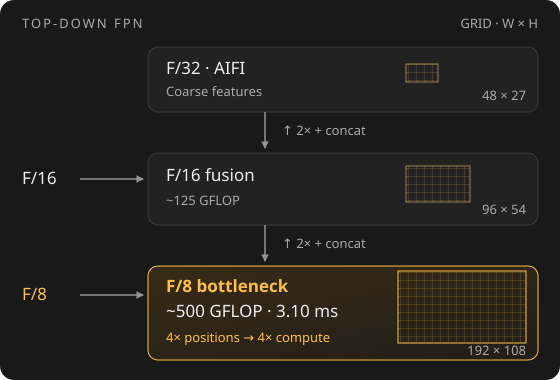
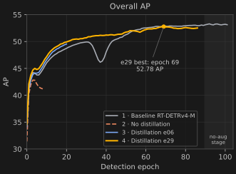
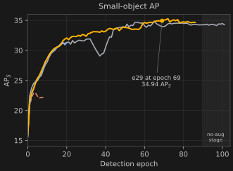
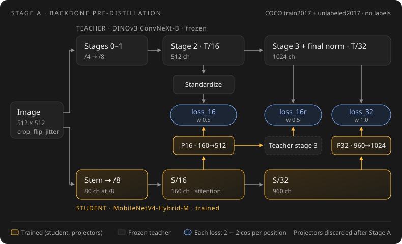

Toward an Input-Size-Scalable Real-Time DETR
Work in progress: the e29 detection run is still training, and the results will be updated when it finishes.
The high-resolution cost of recent real-time backbones
RF-DETR and DEIMv2-M use ViT backbones; GTR uses gated linear attention. RT-DETRv4-M uses the hierarchical CNN HGNetv2-B2. How much does the backbone cost at high resolution?
1536 × 876 · Batch size 8 · NVIDIA RTX 4090 · Backbone-only latency
| Backbone | Latency (ms) | Notes |
|---|---|---|
| HGNetv2-B2 (RT-DETRv4-M) | 7.7 | CNN |
| GTR-M | 17.06 | Gated linear attention plugin; optimization level 5 |
| ViT-Tiny+ (DEIMv2-M) | 20.87 | ViT |
| DINOv3-S/16 | 31.12 | ViT |
HGNetv2-B2 has the lowest latency in this comparison, motivating a lightweight hierarchical backbone. A multi-resolution sweep is still needed to establish scaling.
Benchmark notes
Precision, runtime/version, timing procedure, and whether milliseconds are per batch or per image remain to be confirmed. These timings exclude the detector encoder and decoder.
Where RT-DETRv4-M spends its time
We use RT-DETRv4-M as our CNN baseline and profile the full detector at the same 1536 × 876, batch size 8, on RTX 4090.
| Component | Profiled ms | Share | Main cost |
|---|---|---|---|
| Backbone: HGNetv2-B2 | 7.32 | 44% | Stem + /4: 3.51 ms; /16 stage: 2.18 ms |
| AIFI + /32 input projection + misc. | 0.53 | 3% | Small share of the total |
| Neck: FPN + PAN | ~6.0 | 36% | High-resolution feature fusion |
↳ /8 top-down block (fpn_blocks.1) |
3.10 | 19% | Largest individual module; included in neck |
| Decoder + query selection/top-k | ~2.73 | 16% | Query selection scans /8, /16 and /32 features |
| Total | 16.61 | 100% | ~16 ms without profiling |
Timings and shares are rounded; the indented row is part of the neck total. The 7.32 ms backbone profile is a separate measurement from the 7.7 ms backbone benchmark above.
The F/8 bottleneck

F/8 is the compute bottleneck: its larger grid has 4× as many positions as F/16, so the same fusion block costs ~500 vs. ~125 GFLOP.
Hypothesis and measurement
Can stronger backbone features reduce the need for an expensive neck? We test two hypotheses:
- Distill from a convolutional teacher. DINOv3 ConvNeXt-B may provide better spatially matched supervision for a hierarchical backbone such as MobileNetV4-Hybrid-M.
- Make the neck thinner. Stronger features may let us reduce FPN/PAN width from 256 to 192, preserving detection quality while lowering F/8 compute.
Why MobileNetV4?
- Efficient at high resolution. Our measurements favor a hierarchical CNN backbone at the tested resolution, motivating MobileNetV4 as a candidate for input-size scaling.
- A natural ConvNeXt student. MobileNetV4's Universal Inverted Bottleneck (UIB) generalizes inverted-bottleneck and ConvNeXt-style blocks. This structural overlap makes it a promising candidate for distillation from DINOv3 ConvNeXt; whether it transfers better remains a hypothesis. MobileNetV4 paper.
Full-detector latency
RTX 4090 · Batch size 8. Latency is per batch; FPS is image throughput (8 × 1000 / latency).
| Model | Latency (ms) | FPS |
|---|---|---|
| MNv4-H0f + width 192 (COCO run) | 13.4–13.5 | ~595 |
| RT-DETRv4-M (HGNetv2-B2), random-weight export | 15.9–16.1 | ~500 |
The combined backbone and neck change reduces latency by about 16%. These timings measure speed; detection results below assess accuracy.
Experiments on COCO
Four detection runs test whether a pre-distilled MobileNetV4 backbone can replace HGNetv2-B2 while the neck narrows from 256 to 192 channels. The two pre-distilled runs differ only in how long the backbone was pre-distilled.
Four configurations
| # | Experiment | Backbone initialization | FPN width | Detection-stage distillation weight | Params |
|---|---|---|---|---|---|
| 1 | Baseline: RT-DETRv4-M | HGNetv2-B2, stock RT-DETRv4 recipe | 256 | GAM, uncapped (upstream) | 19.79 M |
| 2 | Replace backbone, no distillation | MobileNetV4-Hybrid-M, ImageNet-12k weights | 192 | GAM, uncapped | 18.96 M |
| 3 | Distillation, epoch-6 checkpoint (e06) |
MobileNetV4-Hybrid-M after 7 epochs of ConvNeXt-B pre-distillation | 192 | GAM, capped at 15 | 18.96 M |
| 4 | Distillation, epoch-29 checkpoint (e29) |
MobileNetV4-Hybrid-M after 30 epochs of ConvNeXt-B pre-distillation | 192 | GAM, capped at 15 | 18.96 M |
Notes
- Backbone pre-distillation data. Runs 3 and 4 pre-distill on COCO train2017 plus unlabeled2017 (241,690 images); labels are not used.
- GAM does not directly fit MobileNetV4. RT-DETRv4 sets its detection-stage distillation weight with Gradient-guided Adaptive Modulation (GAM), which has no upper bound. It is stable for HGNetv2, but with MobileNetV4 (run 2) the weighted distillation loss grew from 2.1 to 2,557 in 9 epochs, and AP fell after epoch 3. Runs 3 and 4 therefore cap the weight at 15. RT-DETRv4 paper.
- GAM has a multi-GPU issue. GAM updates the weight only on rank 0; the other ranks keep the default. With DDP gradient averaging, the effective weight depends on the GPU count: on my two GPUs, (15 + 5) / 2 = 10. RT-DETRv4 issue #45.
Results on COCO val2017


Conclusion
The pre-distilled MobileNetV4 detector nearly ties RT-DETRv4-M on COCO: at epoch 63, it reaches 52.35 AP versus 52.65 AP for the baseline, with 4% fewer parameters and about 16% lower latency. Small objects are the strongest result: 34.70 vs. 34.08 APS, even though MobileNetV4's stride-8 feature map has only 80 channels, versus 384 in HGNetv2-B2.
It is also ahead of RF-DETR on small objects at the same size. In RF-DETR's design ablation, the medium model with the DINOv2 backbone reaches 34.3 APS. The next step, to 35.8 APS, comes from additional Objects365 pretraining. That 34.3 already includes 60 epochs of Objects365 pretraining, while our detector uses none. RF-DETR paper, Tables 5 and 6.
Appendix: distillation method

A frozen DINOv3 ConvNeXt-B teacher distills MobileNetV4-Hybrid-M on unlabeled COCO images. In ScaleKD terms, the loss has two parts:
- Feature mimicking (
loss_16,loss_32): projected student features match the teacher's /16 features (standardized per channel) and /32 features. - Teacher parameter perception (
loss_16r): projected student /16 features pass through the frozen teacher stage 3 and must reproduce the teacher's /32 features.
Each term is 2 − 2·cos per position, with weights 0.5, 1.0 and 0.5. The projectors are discarded after pre-distillation.